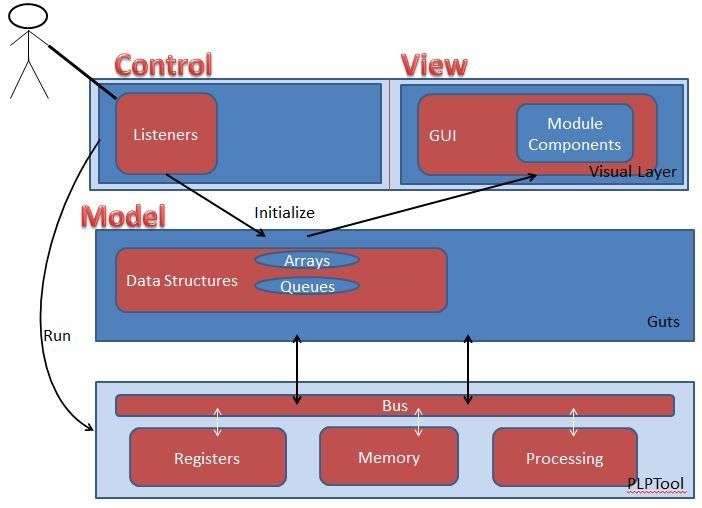

After a semester working with the PLPTool, I was offered the opportunity to join an REU effort funded by the National Science Foundation under the guidance of Dr.Sohum Sohoni for ASU. One of our focuses was to write modules to sit on top of the PLPTool IDE written in java to visualize inner workings of the simulated processor.
Github Reopistory Cointaing All 3 Module Projects
Each of the modules generally follows this MVC schema:
The user of this visualization first drags instructions from the left and places them in the queue. Clicking step will pass the instructions through the pipeline one stage at a time: fetch, decode, execute, memory access, write back. This works by actually writing a program in the background that includes the instructions the user chose and then reading real-time states of each stage of the pipeline. The pipeline visuals lack pieces of the sandwiches in each successive stage, representing that the piece of the instruction used by the previous stage is no longer used. The symbols used to represent the instructions and the sandwich being "eaten" employ a sense of conceptual blending aimed at tying the pipeline to a more identifiable every day object/occurrence. Most of the GUI is made of swing JComponents and each instruction is an object of a custom class for instruction GUI components written by Damon Cost.
This module takes the stored instructions of the program and displays the next 5. Clicking the step button brings a display into view that has the 32 bit instruction broken down into:
R-Type: opCode | rs | rt | rd | shamt | func
J-Type: opCode | target
I-Type: opCode | rs | rt | imm
The blocks represent the actual information stored in the instruction including the source and destination registers, opcodes, immediate fields, etc. Like the pipeline module, the coloring and Y-frame are aimed at conceptual blending of computing concepts with more identifiable everyday concepts.